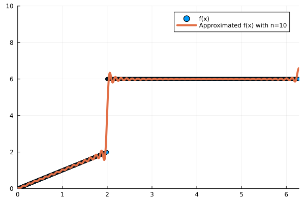

# -*- coding: utf-8 -*-
# ---
# jupyter:
# jupytext:
# text_representation:
# extension: .jl
# format_name: light
# format_version: '1.5'
# jupytext_version: 1.10.3
# kernelspec:
# display_name: Julia 1.8.5
# language: julia
# name: julia-1.8
# ---
# +
using Plots
x = range(-2π, 2π, length=100)
p1 = plot(x,tan.(x),ylims=(-5,5),width=2,label="tan(z)")
plot!(x,-0.5x,ylims=(-5,5),width=2,label="-z/AL")
savefig(p1,"Sturm1.png")
# +
x = range(0, 2π, length=1000)
y1 = range(0, 2π, length=1000)
y2 = one.(x)*6
y3 = zero.(x)*6
y3[ 0 .<= x .< 2] = y1[ 0 .<= x .< 2]
y3[ 2 .<= x .<= 2π]= y2[ 2 .<= x .<= 2π]
p1 = scatter(x,y3,xlims=(0,2π),ylims=(0,10),width=2,label="f(x)")
#for i in 0:1000
# cos_weight_n = y3[0 .<= x .<= 2π]
#end
# using reshape function make them into matrix
#plot(reshape(x,length(x),1),reshape(approx_y,length(x),1))
# +
# with 0 wave number
approx_y = reshape(zero.(x),1, length(x))
for n in 0:10
f = reshape(y3, 1, length(x))
y4 = reshape(cos.(n/2*x),1, length(x))
coef = y4*transpose(f)/(y4*transpose(y4))
approx_y = approx_y+coef*y4
end
p1 = scatter(x,y3,xlims=(0,2π),ylims=(0,10),width=2,label="f(x)")
plot!(reshape(x,length(x),1),reshape(approx_y,length(x),1),xlims=(0,2π-0.1),ylims=(0,10),label="Approximated f(x) with n=10",width=4)
approx_y = reshape(zero.(x),1, length(x))
for n in 0:100
f = reshape(y3, 1, length(x))
y4 = reshape(cos.(n/2*x),1, length(x))
coef = y4*transpose(f)/(y4*transpose(y4))
approx_y = approx_y+coef*y4
end
p2 = scatter(x,y3,xlims=(0,2π),ylims=(0,10),width=2,label="f(x)")
plot!(reshape(x,length(x),1),reshape(approx_y,length(x),1),xlims=(0,2π-0.1),ylims=(0,10),label="Approximated f(x) with n=100",width=4)
approx_y = reshape(zero.(x),1, length(x))
for n in 0:1000
f = reshape(y3, 1, length(x))
y4 = reshape(cos.(n/2*x),1, length(x))
coef = y4*transpose(f)/(y4*transpose(y4))
approx_y = approx_y+coef*y4
end
p3 = scatter(x,y3,xlims=(0,2π),ylims=(0,10),width=2,label="f(x)")
plot!(reshape(x,length(x),1),reshape(approx_y,length(x),1),xlims=(0,2π-0.1),ylims=(0,10),label="Approximated f(x) with n=1000",width=4)
p4 = plot(p1, p2, p3, layout = (1,3),loc="upper right")
plot!(size=(1000,300))
savefig(p4,"Sturm2.png")
# +
using Plots
x = range(0, 2π, length=1000)
y1 = range(0, 2π, length=1000)
y2 = one.(x)*6
f = zero.(x)
f[ 0 .<= x .< 2] = y1[ 0 .<= x .< 2] # jump condition, when 0<=x<2, f(x)=x
f[ 2 .<= x .<= 2π]= y2[ 2 .<= x .<= 2π] # jump condition, when 2<=x<2pi, f(x)=6
approx_y = reshape(zero.(x),1, length(x))
for n in 0:10
f = reshape(f, 1, length(x)) # function f
y4 = reshape(cos.(n/2*x),1, length(x)) # cos basis
coef = y4*transpose(f)/(y4*transpose(y4)) # calculate the coefficient for each cos function
approx_y = approx_y+coef*y4
end
p1 = scatter(x,y3,xlims=(0,2π),ylims=(0,10),width=2,label="f(x)")
plot!(reshape(x,length(x),1),reshape(approx_y,length(x),1),xlims=(0,2π),ylims=(0,10),label="Approximated f(x) with n=10",width=4)
# -
x = range(-10π, 10π, length=200)
y = sinc.(x)
p1 = plot(x,y,width=3,
label="Sinc",
xlabel = "ω",)
savefig(p1,"Sturm3.png")
"/Users/kaichiht/Library/CloudStorage/GoogleDrive-kuiper2000@gmail.com/My Drive/website-hugo/Applied_Math/ODE/Sturm3.png"
using Plots
x = range(0, 2π, length=1000)
y1 = range(0, 2π, length=1000)
y2 = one.(x)*6
f = zero.(x)
f[ 0 .<= x .< 2] = y1[ 0 .<= x .< 2] # jump condition, when 0<=x<2, f(x)=x
f[ 2 .<= x .<= 2π]= y2[ 2 .<= x .<= 2π] # jump condition, when 2<=x<2pi, f(x)=6
approx_y = reshape(zero.(x),1, length(x))
for n in 0:100
f = reshape(f, 1, length(x)) # function f
y4 = reshape(cos.(n/2*x),1, length(x)) # cos basis
coef = y4*transpose(f)/(y4*transpose(y4)) # calculate the coefficient for each cos function
approx_y = approx_y+coef*y4
end
p1 = scatter(x,y3,xlims=(0,2π),ylims=(0,10),width=2,label="f(x)")
plot!(reshape(x,length(x),1),reshape(approx_y,length(x),1),xlims=(0,2π),ylims=(0,10),label="Approximated f(x) with n=10",width=4)
